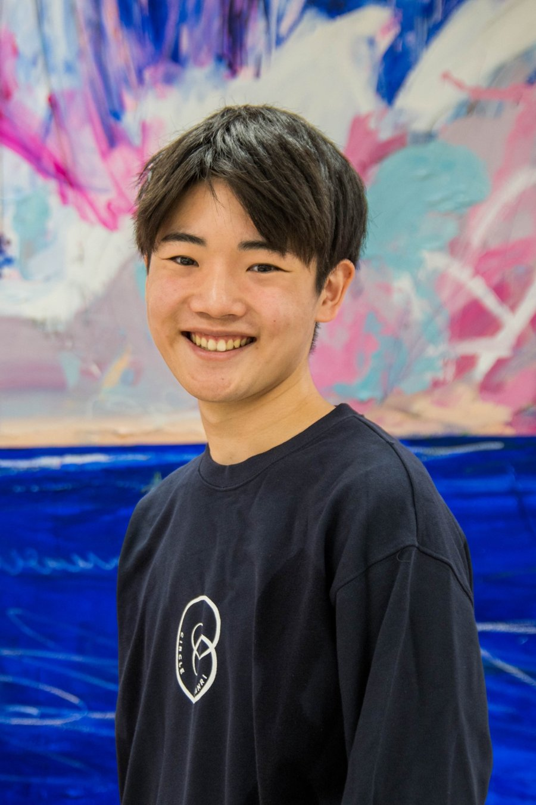

コミュニティ運営
CIRCLE by ANRI
ベンチャーキャピタルのANRIが運営する、スタートアップのためのオフィスで働いています。入居者の方々との日々の会話を大切にしながら、学生交流会やランチ会など、普段は顔を合わせない人同士が知り合うきっかけをつくっています。
PROFILE
小塩 啓太郎 ／ こっしー
慶應義塾大学 商学部 3年。人と話すことと、文章を書くことが好きです。大学に通いながら、起業家が集まるオフィスの運営と、海外M&Aの仕事に携わっています。

人と人が出会うきっかけをつくること、そしてその人の話を深く聞いて言葉にすることが好きです。
コミュニティ運営
ベンチャーキャピタルのANRIが運営する、スタートアップのためのオフィスで働いています。入居者の方々との日々の会話を大切にしながら、学生交流会やランチ会など、普段は顔を合わせない人同士が知り合うきっかけをつくっています。
海外M&A
CIRCLEでのご縁をきっかけに、ANRIの投資先でもインターンを始めました。海外の売り手企業への連絡から面談の調整・同席までを経験し、企業の売却を検討する方とどう関係を築くかを学んでいます。
取材・執筆
学生新聞で記事の企画・執筆と企業協賛の窓口を担当。取材では、読者の立場で「そこをもう少し聞きたい」と思える問いを考えるのが好きです。
慶應義塾大学 商学部 商学科
ポーカーサークルを立ち上げ。SNSが得意な友人には発信を、人に声をかけるのが上手な友人には新歓を手伝ってもらい、仲間と一緒に活動の輪を広げました。東京都立国立高等学校
いちばんの思い出は文化祭。仲間と一緒に一つのものを形にする楽しさが、今もイベントを企画する原動力になっています。よく聴く音楽 — SEKAI NO OWARI